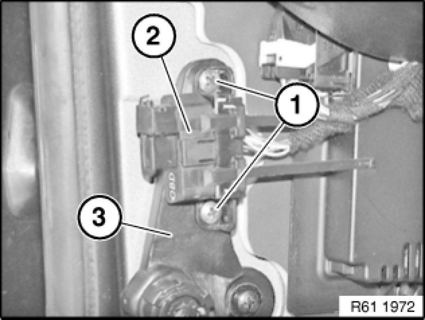
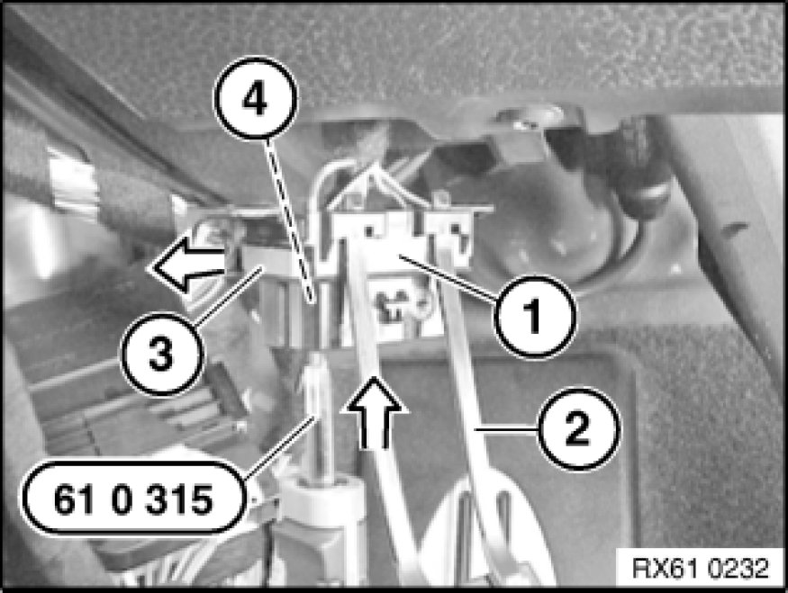

Data Link Connector: Service and Repair
61 13 ... - Removing and installing/replacing OBD-II socket

Special tools required:

Necessary preliminary tasks:
- Remove footwell side trim panel on A-pillar, left [1][2]51 43 070 Removing and Installing/Replacing Side Trim Panel, Footwell, on A-pillar, Left

Release screws (1).
Remove OBD-II socket (2) from holder (3).

Remove OBD-II socket cover (2) from OBD-II socket (1).
Unlock slide plate (3) with a suitable tool in direction of arrow.
Insert special tool 61 0 315 in OBD-II socket (1) in direction of arrow and press out associated flat spring contact (4). Press remaining flat spring contacts with special tool 61 0 315 out of OBD-II socket (1).
Installation:
Pay attention to pin assignment of OBD-II socket (1).
Make sure flat spring contacts and slide plate (3) are correctly engaged and seated in OBD-II socket (1).